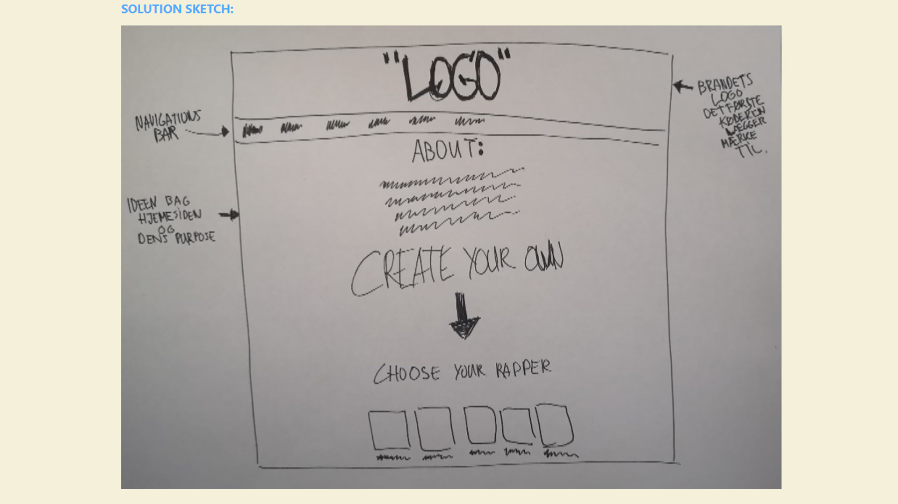

Idé

(Du kommer ind på opgaven vet at trykke på billedet ovenover)
Opgave: 03.01.05 Idé
Værktøjer: Adobe XD / Sketches
Projekt type: Fra UX Research til Idé
I tema 3 blev vi bl.a. Introduceret til hvordan man kommer fra et UX research til en Ide vha. Af Observations, Interview og Desk research. I denne opgave skulle vi finde på en unik ide til salg af t-shirts.
Mit USP i denne research var at der ikke fandtes et marked indenfor t-shirts med et stort print af nutidens hip-hoppere. Udefra observations-research fandt jeg ud af at det er vigtigt for brugeren at få råd og anerkendelse af tøjet, derfor en del knap af varen er meget vigtigt. Resultaterne af Interview-research ledte til at der skulle være detaljeret billeder af varen, så køberen kan nemmere forestille sig pasformen. Resultaterne i mit Desk research viste at der var mange ønsker om at der skulle være et ønske knap på siden, så brugeren kan nemt finde varen igen, på den måde forbedres brugerens User Experience også. Udefra mit survey fandt jeg ud af at de fleste brugere køber tøjet oftest på computer, derfor skulle der lægges mere vægt på desktop-versionen af hjemmesiden.
Dertil anvendte jeg tre forskellige metoder til at lave sketches: Ideas, Crazy 8s og Solution sketch. Det ledte til at jeg bl.a. designede en interaktiv og anderledes forside, hvor brugeren kunne vælge deres favorit kunstner ved at trykke på kunstnerens album cover og bagefter vælge farve ved at trykke på de forskellige biler.